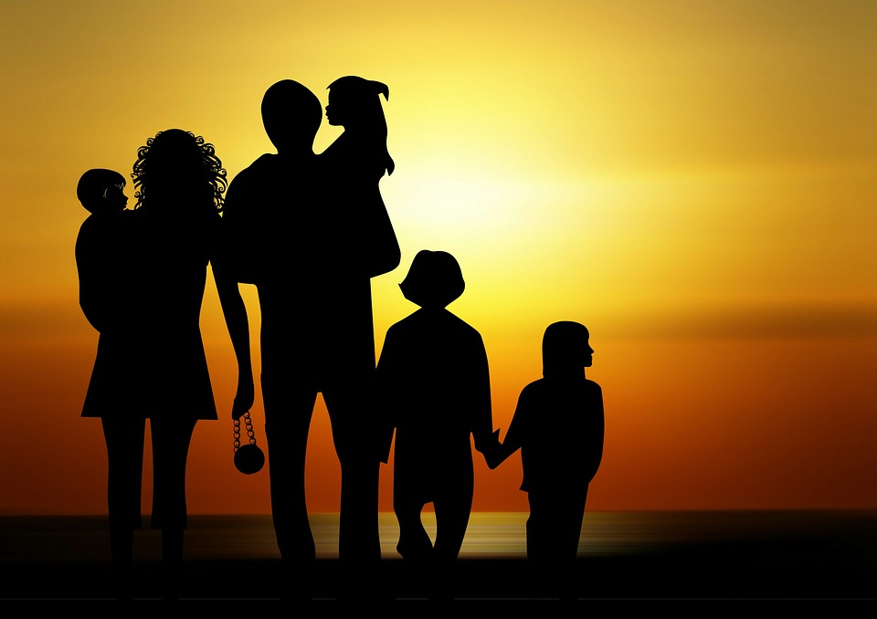

| BitmPHP.Batch:72.ID:190360. Project: One | Course Instructor: Mr. Habibur Rahman. | ||||||||||
|
Abhijit Majumderঅভিজিৎ মজুমদারHi!, I'm Abhijit Majumder & this is my first website submitted as a project at BITM. |
|
HOME |
ABOUT |
PORT-FOLIO |
GALLERY |
CONTACT |
||||
  | ▸Education:Hi, I'm Abhijit Majumder. I've completed my BSc. graduation in August 2017, major in Electrical & Electronics Engineering from a private University in Chattagong named Premier University. Before that I passed my Higher Secondary & Secondary School Certificate from Dhaka board, group in science in 2011 & 2009 respectively. Currently, I'm trying hard to pursue a job and heading towards 38th BCS exam. Along with this, I'm doing a course on Web App Devolopement PHP at BITM. ▸Family:I came from a prominent Hindu family. I'm the eldest son of my parents. I've a younger brother & a sister and we live with our parents at Mirpur 14. My father is a government employee and my mother is a housewife. I love my family members very much. ▸FriendsI have two friend circle in my life, one is in dhaka and the other is in chattagong.Both these circles are not so big because I like to mix with selected people and I'm satisfied with my friends I got.They are good and most of them are almost near to their success. We have a tea stall in our area where we always like to meet.A few years ago it was crowed with friends all along the day but in recent times scenario has been changed, most of them are busy with their own field and we can't meet one another in day time. But we still have a good bonding. We meet after eight O'clock at night at the same tea stall. I love my friends also. We have grown together and we will love to do in future. ▸Hobbies:Touring is the greatest hobby in my friend circle. Almost everyone likes to go for a tour. Every year in the Eid vacation all of us set for a tour. This year we toured in Chattagong, previous year we went Sylhet. |
|||||||||||
| BitmPHP.Batch:72.ID:190360. Project: One |  |
|||||||||||